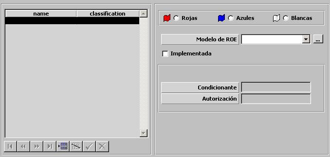

Perfiles ROE

Mediante esta tabla se especifican todas las ROEs disponibles en el Ejercicio, Estas ROE podrán ser implementadas por el instructor, durante la ejecución de este ejercicio.
Modelo de ROE: Podrá ser seleccionado de entre las ROE definidas. Mediante el botón de etiqueta “...” se abre el diálogo para definir las ROE. Ver apartado Preparación – Modelos Básicos – ROEs –ROE.
Implementada: Este parámetro determina la ROE está implementada desde el inicio del ejercicio.
En la parte inferior de la ventana se muestran el nombre de Condicionante y Autorización de la ROE seleccionada. Estos campos son de consulta y por tanto no son editables.